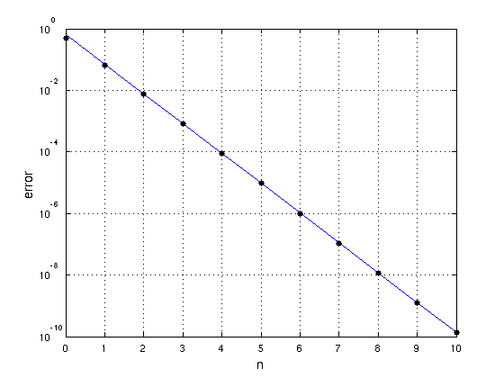
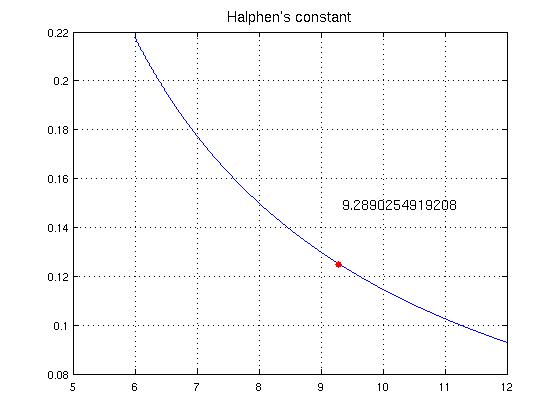

Halphen's constant for approximation of exp(x)
Nick Trefethen, May 2011
(Chebfun example approx/Halphen.m)
A well-known problem in approximation theory is, how well can exp(x) be approximated in the infinity norm on the infinite interval (-infty,0] by rational functions of type (n,n)? To three places, the first few approximation errors are these:
Type (0,0): error = 0.500 Type (1,1): error = 0.0668 Type (2,2): error = 0.00736 Type (3,3): error = 0.000799 Type (4,4): error = 0.0000865 Type (5,5): error = 0.00000934 Type (6,6): error = 0.000001008 Type (7,7): error = 0.0000001087 Type (8,8): error = 0.00000001172
As n increases to infinity, it is known that the asymptotic behavior is
error ~ 2 C^(-n-1/2),
where C is a number known as Halphen's constant with the following approximate numerical value:
halphen_const = 9.289025491920818918755449435951
halphen_const = 9.289025491920819
This result comes from a sequence of contributions between 1969 and 2002 by, among others, Cody, Meinardus and Varga; Newman; Trefethen and Gutknecht; Carpenter, Ruttan and Varga; Magnus; Gonchar and Rakhmanov; and Aptekarev.
Here is a plot showing that the asymptotic behavior matches the actual errors very closely even for small n:
LW = 'linewidth'; MS = 'markersize'; FS = 'fontsize'; n = 0:10; err = [.5 .0668 7.36e-3 7.99e-4 8.65e-5 9.35e-6 ... 1.01e-6 1.09e-7 1.17e-8 1.26e-9 1.36e-10]; model = 2*halphen_const.^(-n-.5); hold off, semilogy(n,model,'-b',LW,1.2) hold on, semilogy(n,err,'.k',MS,18), grid on xlabel('n',FS,14), ylabel('error',FS,14)
One way to characterize Halphen's constant mathematically is that it is the inverse of the unique positive value of s where the function
SUM from k=1 to infty of ks^n/(1-(-s)^n)
takes the value 1/8. This is an easy computation for Chebfun:
s = chebfun('s',[1/12,1/6]); f = 0*s; k = 0; normsk = 999; while normsk > 1e-16 k = k+1; sk = s.^k; f = f + k*sk./(1-(-1)^k*sk); normsk = norm(sk,inf); end hold off, plot(1./s,f,LW,1.2), grid on h = 1/roots(f-1/8); hold on, plot(h,1/8,'.r',MS,20) title('Halphen''s constant',FS,14) text(h,.15,sprintf('%16.13f',h),FS,14)
References:
[1] A. J. Carpenter, A. Ruttan, and R. S. Varga, Extended numerical computations on the "1/9" conjecture in rational approximation theory, in P. Graves-Morris, E. B. Saff, and R. S. Varga, eds., Rational Aprpoximation and Interpolation, Lecture Notes in Mathematics 1005, Springer, 1984.
[2] A. A. Gonchar and E. A. Rakhmanov, Equilibrium distributions and degree of rational approximation of analytic functions, Math. USSR Sbornik 62 (1989), 305-348.
[3] L. N. Trefethen, Approximation Theory and Approximation Practice, draft available at http://www.maths.ox.ac.uk/chebfun/ATAP (chapter 24).